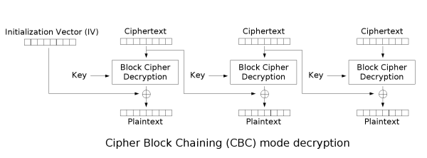

前言
在AES加密算法中分有AES-128、AES-192、AES-256，而每种对加密数据的分块长度又各有要求，分别为16byte【128位、24byte【192位和32byte【256位。
在AES加密的CBC模式中，若加密数据的长度模除分块长度而有余，则会在末尾填充一组数据。
即(pad_length-len(data)%pad_length)*hex(pad_length-len(data)%pad_length)。
若模除后为零，则直接填充一组如上公式所示的数据。
举例
1
2
3
4
5
6
7
8
9
10
11
12
| 数据：
south
补齐后的数据：
south/x13/x13/x13/x13/x13/x13/x13/x13/x13/x13/x13
数据：
southseast
补齐后的数据：
southseast/x06/x06/x06/x06/x06/x06
数据：
southseastisacat
补齐后的数据：
southseastisacat/x10/x10/x10/x10/x10/x10/x10/x10/x10/x10/x10/x10/x10/x10/x10/x10
|
加密

首先是对明文分组，根据选择的模式所要求的分组长度来分组，填充数据块。
接着初始化一个IV【初始向量和Key【秘钥。
再将第一组明文和IV异或，后同Key进行块加密。
然后将得到的密文作为下一组明文进行快加密前的IV用来异或。
如此反复，最后拼接所有密文和IV。
解密

首先是从密文中截取出IV【一般是拼接在头尾。
然后对密文分组，将第一组密文先同秘钥进行解密。
接着和IV异或得到明文，第二组的密文解密后同上一组的密文异或得到明文。
如此反复到最后一组，得到明文后判断最后填充的数据是否符合(pad_length-len(data)%pad_length)*hex(pad_length-len(data)%pad_length)，若不对，即Padding错误，抛出异常。
关于Padding Oracle
在CBC模式中，IV是不要求保密的，故对于攻击者而言，可以获取到的数据有IV和密文。
在确定了加密模式后，提取IV，并分组密文，然后构造另一组IV拼接密文发回服务器来对其进行爆破。
举例
此处选择了AES-128作为例子，明文长度为17位，故补齐至32位后分2组进行加密。
后伪造一组IV来和第一组密文一起发回服务器，让其进行判定。
1
2
3
4
5
6
| 明文：
southseastisacat!
IV：
\x31\x32\x33\x34\x35\x36\x37\x38\x38\x37\x36\x35\x34\x33\x32\x31
密文：
\xbf\x61\xb3\x1b\xd3\x6a\x47\x11\xb9\xcc\xd7\x11\x7b\x8a\x42\xd9\x3a\x1e\x37\xe9\xd2\xde\xfa\xca\xa2\x50\xfd\xc0\x6e\xf2\x11\xc1
|
对最后一位字符进行爆破，构造0x00到0xff，使得第一组密文的最后一个字节解密的结果同IV异或结果为0x01，导致Padding通过，服务器返回正确结果。
这时IV的最后一个字节和原IV的最后一个字节还有0x01异或，即0x44^0x31^0x01，得到结果为t，是第一组明文的最后一个字符。
1
2
3
4
| 第一组密文：
\xbf\x61\xb3\x1b\xd3\x6a\x47\x11\xb9\xcc\xd7\x11\x7b\x8a\x42\xd9
IV：
\x00\x00\x00\x00\x00\x00\x00\x00\x00\x00\x00\x00\x00\x00\x00\x44
|
这个就是逆推的公式。
1
2
3
4
5
6
| ∵
decryp(cipher) ^ iv = plain
decryp(cipher) ^ fake_iv = new_plain
new_plain[-1:] = 0x01
∴
fake_iv[:-1] ^ iv[:-1] ^ plain[:-1] = 0x01
|
例题
hulk
这是BCTF 2017的一道题。
源码中，在对第二次获取到的明文加密时，使用的IV是第一次密文的后十六个字节，故推出这是一个AES-128加密，分组长度为16比特。
此中，密文采用了ASCII十六进制的表示方法，即两个字符表示一个字节的十六进制数，这是因为密码学算法中得到的密文经常会出现不可打印字符。因此16个字节加密后得到的会是32字节的密文长度。
测试了一下，在输入数据的字节数从9字节增长到10字节的时候，密文长度增加了16x2，因此根据前文，当明文模除分组长度【16为0时填充一个16x/0x10的Padding，推测出flag的长度为38字节，填充后分组加密，密文长度为48字节。
举例
爆破得出flag的第一字节。
构造第一次输入的Payload长度需为47字节，拼接flag后，明文长度共计85字节，共分六组。
其中由于拼接明文和flag，因此第48字节为flag的第一字节，分组后位于密文的第三组最后一位，将第二组密文作为IV异或后加密。
而第二次输入的明文和第一次加密的第六组密文异或后加密。
所以如果第一次输入的第三组和第二次输入的第一组的IV与明文的异或结果一样，密钥也一样，那么其加密后的密文也就一样。
则此处可以爆破构造输入，已知IV，可以通过爆破明文的方式。
1
2
3
4
5
6
7
8
| # 第一次输入的第三组加密
fir_iv = fir_cipher[2]
encryp(fir_plain[3] ^ fir_iv) = fir_cipher[3]
# 第二次输入的第一组加密
sec_iv = fir_cipher[6]
encryp(sec_plain[1] ^ sec_iv) = sec_cipher[1]
# 联立等式，第三组明文前十五字节已知，需要爆破fir_plain[3]最后一个字节。
fir_plain[3] ^ fir_cipher[2] ^ fir_cipher[6] = sec_plain[1]
|
然后，使得fir_cipher[3]==sec_cipher[1]的最后一个字节就是flag的第一个字节。
最后构造payload长度为46字节，引入后面拼接的flag的两个字节到第三分组，此时已知flag的第一个字节，那么继续爆破第二个字节即可，以此类推，脚本借鉴自Nu1L。
1
2
3
4
5
6
7
8
9
10
11
12
13
14
15
16
17
18
19
20
21
22
23
24
25
26
27
28
29
30
31
32
33
34
35
36
37
38
39
40
41
42
43
44
|
import sys
from zio import *
flag = ''
target = ('127.0.0.1', 9999)
step = 32
dic = "0123456789abcdefghijklmnopqrstuvwxyzABCDEFGHIJKLMNOPQRSTUVWXYZ{}"
def xor(cipher_2, cipher_6, payload):
return ''.join(chr(ord(cipher_2[i]) ^ ord(cipher_6[i]) ^ ord(payload[i])) for i in xrange(16))
def get_flag(i, part_flag):
io = zio(target, timeout=5, print_read=COLORED(NONE, 'red'), print_write=COLORED(NONE, 'green'))
io.read_until('encrypt: 0x')
fir_plain = ('a' * (48 - i)).encode('hex')
io.writeline(fir_plain)
io.read_until('ciphertext: 0x')
fir_cipher = io.read_line()[:-1]
fir_cipher = [fir_cipher[j:j + step] for j in range(0, len(fir_cipher), step)]
payload = ('a' * (39 - len(flag + part_flag)) + flag + part_flag)[-16:]
sec_plain = xor(fir_cipher[1].decode('hex'), fir_cipher[-1].decode('hex'), payload).encode('hex')
io.read_until('encrypt: 0x')
io.writeline(sec_plain)
io.read_until('ciphertext: 0x')
sec_cipher = io.read_line()[:32]
io.close()
return 1 if fir_cipher[2] == sec_cipher else 0
for i in xrange(1, 39):
for part_flag in dic:
if get_flag(i, part_flag):
flag += part_flag
sys.stdout.write("\r%s" % flag)
sys.stdout.flush()
break
|
Refer
我对Padding Oracle攻击的分析和思考（详细）
Web狗要懂的Padding Oracle攻击
Padding Oracle